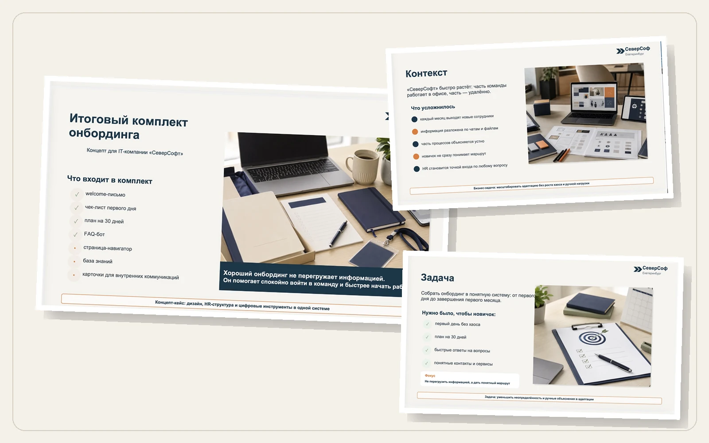
Презентации
Когда нужно ясно представить услугу, проект, отчёт или учебный материал
Выступление · встреча · обучение · отчёт[01] Материалы для бизнеса
Сложное — в понятный рабочий материал
Соберу структуру, отредактирую текст и оформлю презентацию, инструкцию, гайд или комплект материалов для сотрудников и клиентов
Можно прийти с готовым текстом, старым файлом, таблицами или заметками. Разберусь в задаче и предложу формат, которым будет удобно пользоваться в работе
[02] Мои форматы
Под задачу, аудиторию и рабочий сценарий
Сначала определим, что должен понять или сделать читатель. Затем выберем формат и объём

Когда нужно ясно представить услугу, проект, отчёт или учебный материал
Выступление · встреча · обучение · отчёт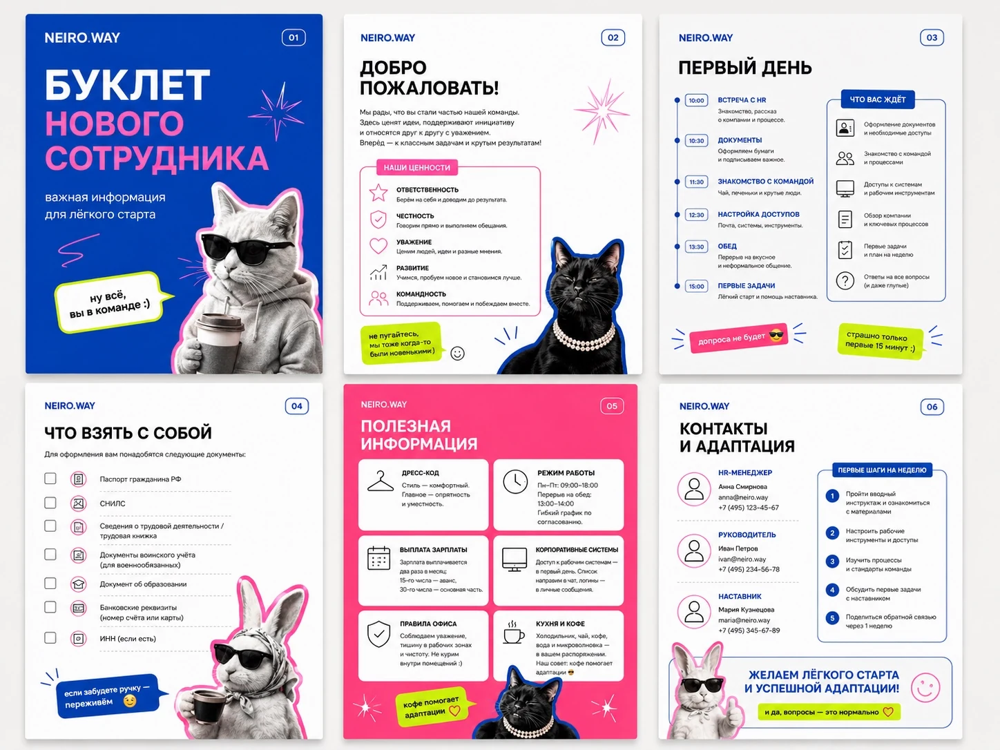
Когда большой объём информации нужно собрать в один удобный документ
Адаптация · каталог · методический материалКогда сотруднику важно быстро найти нужный шаг и выполнить действие без уточнений
Порядок действий · правила · памятка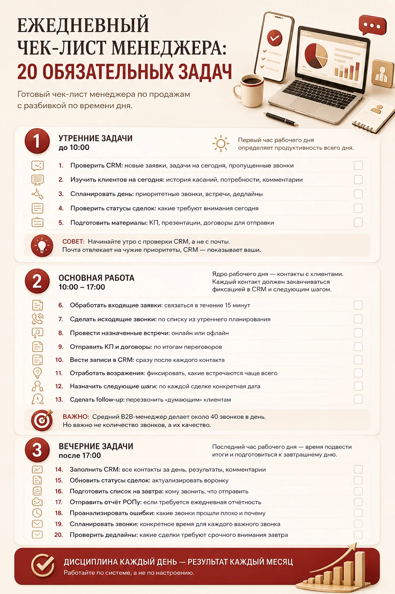
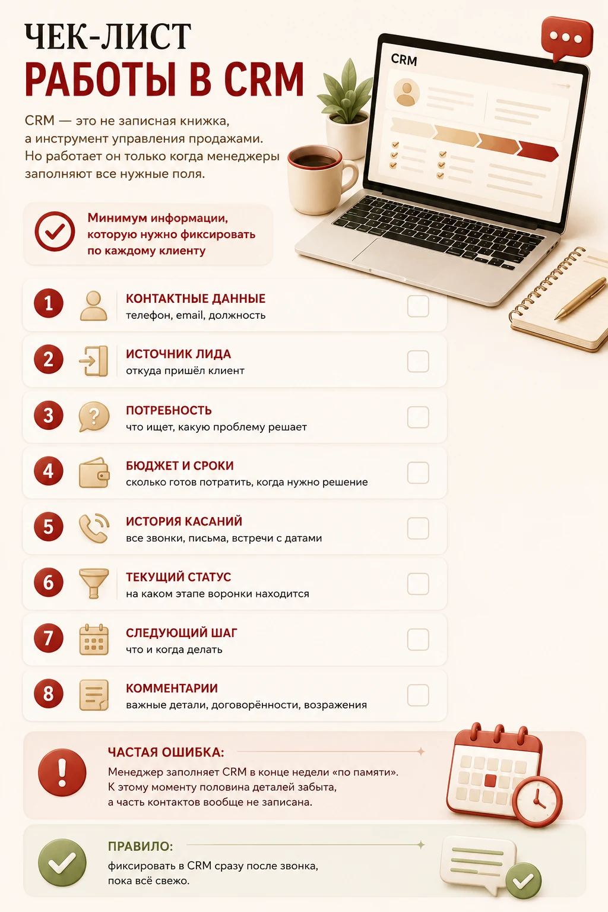
Когда повторяющуюся задачу нужно выполнять одинаково и ничего не забывать
Проверка · маршрут · рабочий шаблон
Когда информацию нужно быстро донести в рабочем чате, на экране или в печати
Анонс · карточка · серия материаловНе нужно угадывать формат заранее — достаточно рассказать, кому и зачем нужен материал
[03] С чем можно прийти
Проверьте, узнаёте ли вы свою ситуацию
Непонятно, что показать сначала и как связать таблицы, тексты и файлы в один материал
На слайдах слишком много подробностей, а главная мысль без комментариев теряется
Нужный шаг трудно найти, поэтому сотрудники всё равно обращаются за пояснениями
Файлы создавались в разное время и не складываются в единую систему
Есть заметки, переписка и старые файлы, но нет готового текста и понятного результата
Подробное техническое задание не требуется
Пришлите материалы в том виде, в котором они есть. Я помогу определить, что оставить, чего не хватает и как выстроить информацию
[04] Темы
Понимаю не только оформление, но и рабочий контекст
[05] Формат работы
Объём работы зависит от того, что уже готово
Если текст и структура готовы
Проверю композицию, расставлю акценты и оформлю текст в едином стиле без изменения смысла
Если есть только исходные материалы
Разберу документы и заметки, предложу структуру, отредактирую формулировки и оформлю готовый файл
[06] Проекты
От исходной задачи к рабочему результату
Показываю не просто картинки, а логику работы: что требовалось, что изменилось и чем стало удобнее пользоваться
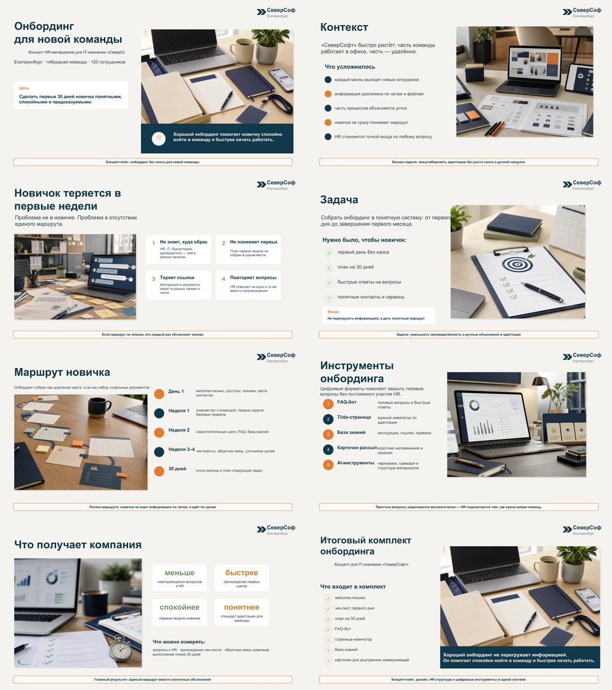
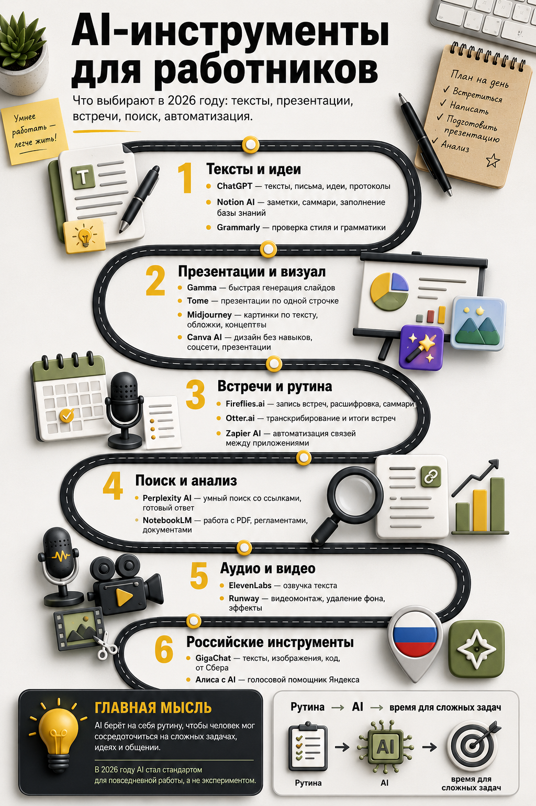
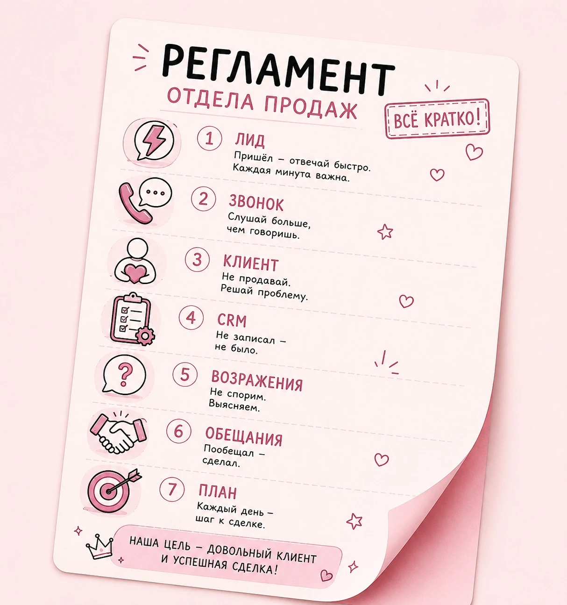
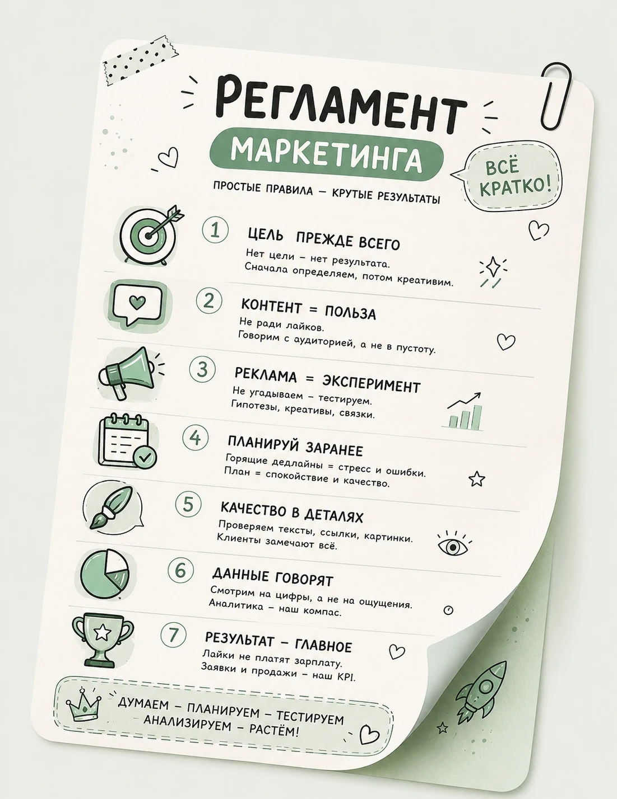
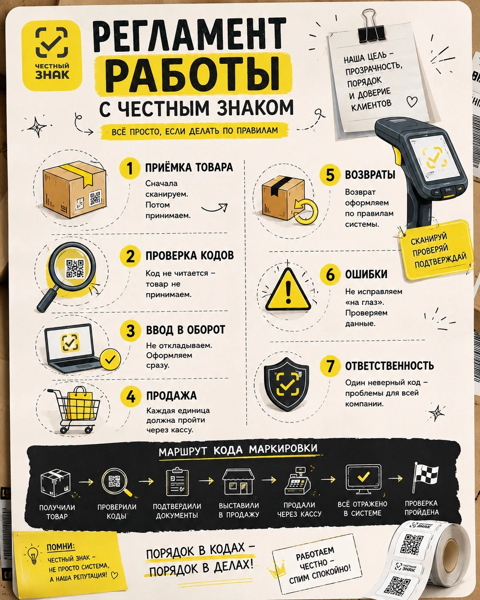
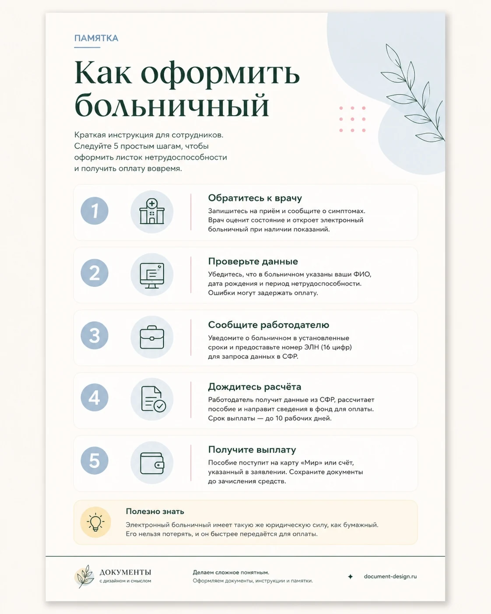
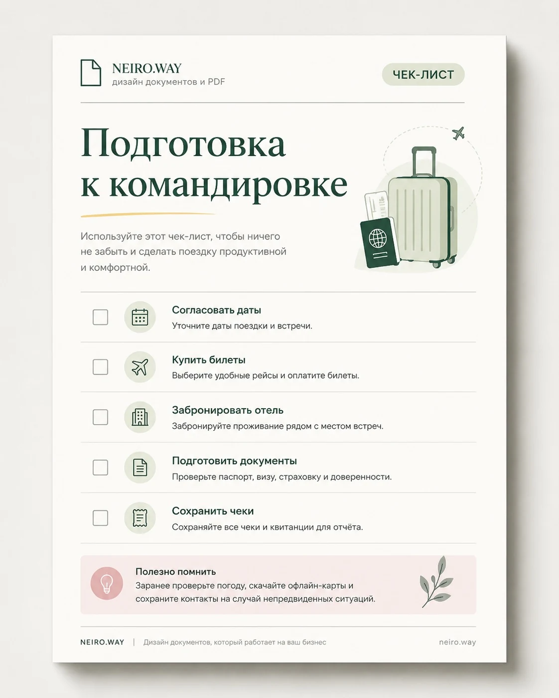
[07] Результат
Не просто красивый файл, а рабочий инструмент
Читатель понимает порядок и быстро находит нужное
Без повторов, канцелярита и перегруженных абзацев
Материал выглядит цельно и соответствует вашей задаче
Для отправки, показа, обучения, публикации или печати
Если информацию нужно менять внутри компании
[08] Контакты
Можно начать с нескольких строк
Пришлите черновик, старый файл или ссылки. Я посмотрю, что уже есть, и предложу понятный следующий шаг
Показать материал